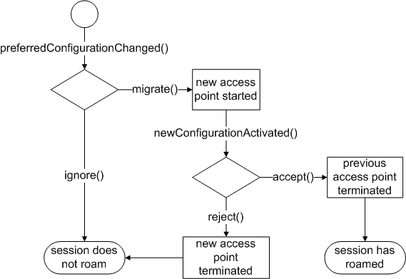

QNetworkSession Class
The QNetworkSession class provides control over the system's access points and enables session management for cases when multiple clients access the same access point. More...
| Header: | #include <QNetworkSession> |
| qmake: | QT += network |
| Since: | Qt 4.7 |
| Inherits: | QObject |
Public Types
| enum | SessionError { UnknownSessionError, SessionAbortedError, RoamingError, OperationNotSupportedError, InvalidConfigurationError } |
| enum | State { Invalid, NotAvailable, Connecting, Connected, ..., Roaming } |
| flags | UsagePolicies |
| enum | UsagePolicy { NoPolicy, NoBackgroundTrafficPolicy } |
Public Functions
| QNetworkSession(const QNetworkConfiguration &connectionConfig, QObject *parent = Q_NULLPTR) | |
| virtual | ~QNetworkSession() |
| quint64 | activeTime() const |
| quint64 | bytesReceived() const |
| quint64 | bytesWritten() const |
| QNetworkConfiguration | configuration() const |
| SessionError | error() const |
| QString | errorString() const |
| QNetworkInterface | interface() const |
| bool | isOpen() const |
| QVariant | sessionProperty(const QString &key) const |
| void | setSessionProperty(const QString &key, const QVariant &value) |
| State | state() const |
| QNetworkSession::UsagePolicies | usagePolicies() const |
| bool | waitForOpened(int msecs = 30000) |
- 31 public functions inherited from QObject
Public Slots
- 1 public slot inherited from QObject
Signals
| void | closed() |
| void | error(QNetworkSession::SessionError error) |
| void | newConfigurationActivated() |
| void | opened() |
| void | preferredConfigurationChanged(const QNetworkConfiguration &config, bool isSeamless) |
| void | stateChanged(QNetworkSession::State state) |
| void | usagePoliciesChanged(QNetworkSession::UsagePolicies usagePolicies) |
- 2 signals inherited from QObject
Additional Inherited Members
- 1 property inherited from QObject
- 1 public variable inherited from QObject
- 10 static public members inherited from QObject
- 9 protected functions inherited from QObject
- 2 protected variables inherited from QObject
Detailed Description
The QNetworkSession class provides control over the system's access points and enables session management for cases when multiple clients access the same access point.
A QNetworkSession enables control over the system's network interfaces. The session's configuration parameter are determined via the QNetworkConfiguration object to which it is bound. Depending on the type of the session (single access point or service network) a session may be linked to one or more network interfaces. By means of opening and closing of network sessions a developer can start and stop the systems network interfaces. If the configuration represents multiple access points (see QNetworkConfiguration::ServiceNetwork) more advanced features such as roaming may be supported.
QNetworkSession supports session management within the same process and depending on the platform's capabilities may support out-of-process sessions. If the same network configuration is used by multiple open sessions the underlying network interface is only terminated once the last session has been closed.
Roaming
Applications may connect to the preferredConfigurationChanged() signal in order to receive notifications when a more suitable access point becomes available. In response to this signal the application must either initiate the roaming via migrate() or ignore() the new access point. Once the session has roamed the newConfigurationActivated() signal is emitted. The application may now test the carrier and must either accept() or reject() it. The session will return to the previous access point if the roaming was rejected. The subsequent state diagram depicts the required state transitions.

Some platforms may distinguish forced roaming and application level roaming (ALR). ALR implies that the application controls (via migrate(), ignore(), accept() and reject()) whether a network session can roam from one access point to the next. Such control is useful if the application maintains stateful socket connections and wants to control the transition from one interface to the next. Forced roaming implies that the system automatically roams to the next network without consulting the application. This has the advantage that the application can make use of roaming features without actually being aware of it. It is expected that the application detects that the underlying socket is broken and automatically reconnects via the new network link.
If the platform supports both modes of roaming, an application indicates its preference by connecting to the preferredConfigurationChanged() signal. Connecting to this signal means that the application wants to take control over the roaming behavior and therefore implies application level roaming. If the client does not connect to the preferredConfigurationChanged(), forced roaming is used. If forced roaming is not supported the network session will not roam by default.
Some applications may want to suppress any form of roaming altogether. Possible use cases may be high priority downloads or remote services which cannot handle a roaming enabled client. Clients can suppress roaming by connecting to the preferredConfigurationChanged() signal and answer each signal emission with ignore().
See also QNetworkConfiguration and QNetworkConfigurationManager.
Member Type Documentation
enum QNetworkSession::SessionError
This enum describes the session errors that can occur.
| Constant | Value | Description |
|---|---|---|
QNetworkSession::UnknownSessionError | 0 | An unidentified error occurred. |
QNetworkSession::SessionAbortedError | 1 | The session was aborted by the user or system. |
QNetworkSession::RoamingError | 2 | The session cannot roam to a new configuration. |
QNetworkSession::OperationNotSupportedError | 3 | The operation is not supported for current configuration. |
QNetworkSession::InvalidConfigurationError | 4 | The operation cannot currently be performed for the current configuration. |
enum QNetworkSession::State
This enum describes the connectivity state of the session. If the session is based on a single access point configuration the state of the session is the same as the state of the associated network interface.
| Constant | Value | Description |
|---|---|---|
QNetworkSession::Invalid | 0 | The session is invalid due to an invalid configuration. This may happen due to a removed access point or a configuration that was invalid to begin with. |
QNetworkSession::NotAvailable | 1 | The session is based on a defined but not yet discovered QNetworkConfiguration (see QNetworkConfiguration::StateFlag). |
QNetworkSession::Connecting | 2 | The network session is being established. |
QNetworkSession::Connected | 3 | The network session is connected. If the current process wishes to use this session it has to register its interest by calling open(). A network session is considered to be ready for socket operations if it isOpen() and connected. |
QNetworkSession::Closing | 4 | The network session is in the process of being shut down. |
QNetworkSession::Disconnected | 5 | The network session is not connected. The associated QNetworkConfiguration has the state QNetworkConfiguration::Discovered. |
QNetworkSession::Roaming | 6 | The network session is roaming from one access point to another access point. |
enum QNetworkSession::UsagePolicy
flags QNetworkSession::UsagePolicies
These flags allow the system to inform the application of network usage restrictions that may be in place.
| Constant | Value | Description |
|---|---|---|
QNetworkSession::NoPolicy | 0 | No policy in force, usage is unrestricted. |
QNetworkSession::NoBackgroundTrafficPolicy | 1 | Background network traffic (not user initiated) should be avoided for example to save battery or data charges |
This enum was introduced or modified in Qt 5.0.
The UsagePolicies type is a typedef for QFlags<UsagePolicy>. It stores an OR combination of UsagePolicy values.
Member Function Documentation
QNetworkSession::QNetworkSession(const QNetworkConfiguration &connectionConfig, QObject *parent = Q_NULLPTR)
Constructs a session based on connectionConfig with the given parent.
See also QNetworkConfiguration.
[virtual] QNetworkSession::~QNetworkSession()
Frees the resources associated with the QNetworkSession object.
[slot] void QNetworkSession::accept()
Instructs the session to permanently accept the new access point. Once this function has been called the session may not return to the old access point.
The old access point may be closed in the process if there are no other network sessions for it. Therefore any open socket that still uses the old access point may become unusable and should be closed before completing the migration.
quint64 QNetworkSession::activeTime() const
Returns the number of seconds that the session has been active.
quint64 QNetworkSession::bytesReceived() const
Returns the amount of data received in bytes; otherwise 0.
This field value includes the usage across all open network sessions which use the same network interface.
If the session is based on a service network configuration the number of sent bytes across all active member configurations are returned.
This function may not always be supported on all platforms and returns 0. The platform capability can be detected via QNetworkConfigurationManager::DataStatistics.
Note: On some platforms this function may run the main event loop.
quint64 QNetworkSession::bytesWritten() const
Returns the amount of data sent in bytes; otherwise 0.
This field value includes the usage across all open network sessions which use the same network interface.
If the session is based on a service network configuration the number of sent bytes across all active member configurations are returned.
This function may not always be supported on all platforms and returns 0. The platform capability can be detected via QNetworkConfigurationManager::DataStatistics.
Note: On some platforms this function may run the main event loop.
[slot] void QNetworkSession::close()
Decreases the session counter on the associated network configuration. If the session counter reaches zero the active network interface is shut down. This also means that state() will only change from Connected to Disconnected if the current session was the last open session.
If the platform does not support out-of-process sessions calling this function does not stop the interface. In this case stop() has to be used to force a shut down. The platform capabilities can be detected via QNetworkConfigurationManager::capabilities().
Note that this call is asynchronous. Depending on the outcome of this call the results can be enquired by connecting to the stateChanged(), opened() or error() signals.
See also open(), stop(), and isOpen().
[signal] void QNetworkSession::closed()
This signal is emitted when the network session has been closed.
QNetworkConfiguration QNetworkSession::configuration() const
Returns the QNetworkConfiguration that this network session object is based on.
See also QNetworkConfiguration.
SessionError QNetworkSession::error() const
Returns the type of error that last occurred.
See also state() and errorString().
[signal] void QNetworkSession::error(QNetworkSession::SessionError error)
This signal is emitted after an error occurred. The error parameter describes the error that occurred.
Note: Signal error is overloaded in this class. To connect to this one using the function pointer syntax, you must specify the signal type in a static cast, as shown in this example:
connect(networkSession, static_cast<void(QNetworkSession::*)(QNetworkSession::SessionError)>(&QNetworkSession::error), [=](QNetworkSession::SessionError error){ /* ... */ });
See also error() and errorString().
QString QNetworkSession::errorString() const
Returns a human-readable description of the last device error that occurred.
See also error().
[slot] void QNetworkSession::ignore()
This function indicates that the application does not wish to roam the session.
See also migrate().
QNetworkInterface QNetworkSession::interface() const
Returns the network interface that is used by this session.
This function only returns a valid QNetworkInterface when this session is Connected.
The returned interface may change as a result of a roaming process.
See also state().
bool QNetworkSession::isOpen() const
Returns true if this session is open. If the number of all open sessions is greater than zero the underlying network interface will remain connected/up.
The session can be controlled via open() and close().
[slot] void QNetworkSession::migrate()
Instructs the session to roam to the new access point. The old access point remains active until the application calls accept().
The newConfigurationActivated() signal is emitted once roaming has been completed.
See also accept().
[signal] void QNetworkSession::newConfigurationActivated()
This signal is emitted once the session has roamed to the new access point. The application may reopen its socket and test the suitability of the new network link. Subsequently it must either accept() or reject() the new access point.
See also accept() and reject().
[slot] void QNetworkSession::open()
Creates an open session which increases the session counter on the underlying network interface. The system will not terminate a network interface until the session reference counter reaches zero. Therefore an open session allows an application to register its use of the interface.
As a result of calling open() the interface will be started if it is not connected/up yet. Some platforms may not provide support for out-of-process sessions. On such platforms the session counter ignores any sessions held by another process. The platform capabilities can be detected via QNetworkConfigurationManager::capabilities().
Note that this call is asynchronous. Depending on the outcome of this call the results can be enquired by connecting to the stateChanged(), opened() or error() signals.
It is not a requirement to open a session in order to monitor the underlying network interface.
See also close(), stop(), and isOpen().
[signal] void QNetworkSession::opened()
This signal is emitted when the network session has been opened.
The underlying network interface will not be shut down as long as the session remains open. Note that this feature is dependent on system wide session support.
[signal] void QNetworkSession::preferredConfigurationChanged(const QNetworkConfiguration &config, bool isSeamless)
This signal is emitted when the preferred configuration/access point for the session changes. Only sessions which are based on service network configurations may emit this signal. config can be used to determine access point specific details such as proxy settings and isSeamless indicates whether roaming will break the sessions IP address.
As a consequence to this signal the application must either start the roaming process by calling migrate() or choose to ignore() the new access point.
If the roaming process is non-seamless the IP address will change which means that a socket becomes invalid. However seamless mobility can ensure that the local IP address does not change. This is achieved by using a virtual IP address which is bound to the actual link address. During the roaming process the virtual address is attached to the new link address.
Some platforms may support the concept of Forced Roaming and Application Level Roaming (ALR). Forced roaming implies that the platform may simply roam to a new configuration without consulting applications. It is up to the application to detect the link layer loss and reestablish its sockets. In contrast ALR provides the opportunity to prevent the system from roaming. If this session is based on a configuration that supports roaming the application can choose whether it wants to be consulted (ALR use case) by connecting to this signal. For as long as this signal connection remains the session remains registered as a roaming stakeholder; otherwise roaming will be enforced by the platform.
See also migrate(), ignore(), and QNetworkConfiguration::isRoamingAvailable().
[slot] void QNetworkSession::reject()
The new access point is not suitable for the application. By calling this function the session returns to the previous access point/configuration. This action may invalidate any socket that has been created via the not desired access point.
See also accept().
QVariant QNetworkSession::sessionProperty(const QString &key) const
Returns the value for property key.
A network session can have properties attached which may describe the session in more details. This function can be used to gain access to those properties.
The following property keys are guaranteed to be specified on all platforms:
| Key | Description |
|---|---|
| ActiveConfiguration | If the session isOpen() this property returns the identifier of the QNetworkConfiguration that is used by this session; otherwise an empty string. The main purpose of this key is to determine which Internet access point is used if the session is based on a ServiceNetwork. The following code snippet highlights the difference: QNetworkConfigurationManager mgr; QNetworkConfiguration ap = mgr.defaultConfiguration(); QNetworkSession *session = new QNetworkSession(ap); ... //code activates session QString ident = session->sessionProperty("ActiveConfiguration").toString(); if ( ap.type() == QNetworkConfiguration::ServiceNetwork ) { Q_ASSERT( ap.identifier() != ident ); Q_ASSERT( ap.children().contains( mgr.configurationFromIdentifier(ident) ) ); } else if ( ap.type() == QNetworkConfiguration::InternetAccessPoint ) { Q_ASSERT( ap.identifier() == ident ); } |
| UserChoiceConfiguration | If the session isOpen() and is bound to a QNetworkConfiguration of type UserChoice, this property returns the identifier of the QNetworkConfiguration that the configuration resolved to when open() was called; otherwise an empty string. The purpose of this key is to determine the real QNetworkConfiguration that the session is using. This key is different from ActiveConfiguration in that this key may return an identifier for either a service network or a Internet access points configurations, whereas ActiveConfiguration always returns identifiers to Internet access points configurations. |
| ConnectInBackground | Setting this property to true before calling open() implies that the connection attempt is made but if no connection can be established, the user is not connsulted and asked to select a suitable connection. This property is not set by default and support for it depends on the platform. |
| AutoCloseSessionTimeout | If the session requires polling to keep its state up to date, this property holds the timeout in milliseconds before the session will automatically close. If the value of this property is -1 the session will not automatically close. This property is set to -1 by default. The purpose of this property is to minimize resource use on platforms that use polling to update the state of the session. Applications can set the value of this property to the desired timeout before the session is closed. In response to the closed() signal the network session should be deleted to ensure that all polling is stopped. The session can then be recreated once it is required again. This property has no effect for sessions that do not require polling. |
See also setSessionProperty().
void QNetworkSession::setSessionProperty(const QString &key, const QVariant &value)
Sets the property value on the session. The property is identified using key. Removing an already set property can be achieved by passing an invalid QVariant.
Note that the UserChoiceConfiguration and ActiveConfiguration properties are read only and cannot be changed using this method.
See also sessionProperty().
State QNetworkSession::state() const
Returns the state of the session.
If the session is based on a single access point configuration the state of the session is the same as the state of the associated network interface. Therefore a network session object can be used to monitor network interfaces.
A QNetworkConfiguration::ServiceNetwork based session summarizes the state of all its children and therefore returns the Connected state if at least one of the service network's children() configurations is active.
Note that it is not required to hold an open session in order to obtain the network interface state. A connected but closed session may be used to monitor network interfaces whereas an open and connected session object may prevent the network interface from being shut down.
See also error() and stateChanged().
[signal] void QNetworkSession::stateChanged(QNetworkSession::State state)
This signal is emitted whenever the state of the network session changes. The state parameter is the new state.
See also state().
[slot] void QNetworkSession::stop()
Invalidates all open sessions against the network interface and therefore stops the underlying network interface. This function always changes the session's state() flag to Disconnected.
QNetworkSession::UsagePolicies QNetworkSession::usagePolicies() const
Returns the network usage policies currently in force by the system.
[signal] void QNetworkSession::usagePoliciesChanged(QNetworkSession::UsagePolicies usagePolicies)
This signal is emitted when the usagePolicies in force are changed by the system.
This function was introduced in Qt 5.0.
bool QNetworkSession::waitForOpened(int msecs = 30000)
Waits until the session has been opened, up to msecs milliseconds. If the session has been opened, this function returns true; otherwise it returns false. In the case where it returns false, you can call error() to determine the cause of the error.
The following example waits up to one second for the session to be opened:
session->open(); if (session->waitForOpened(1000)) qDebug("Open!");
If msecs is -1, this function will not time out.